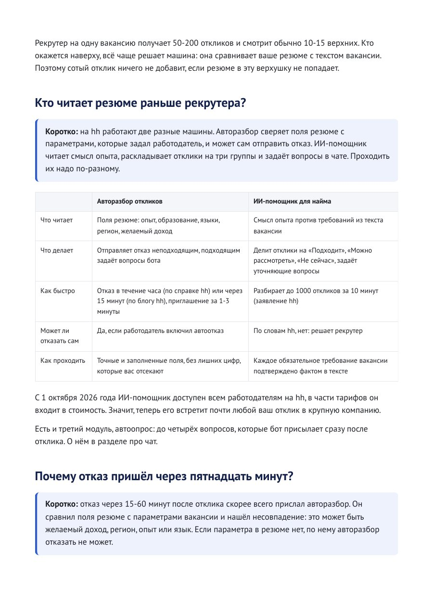
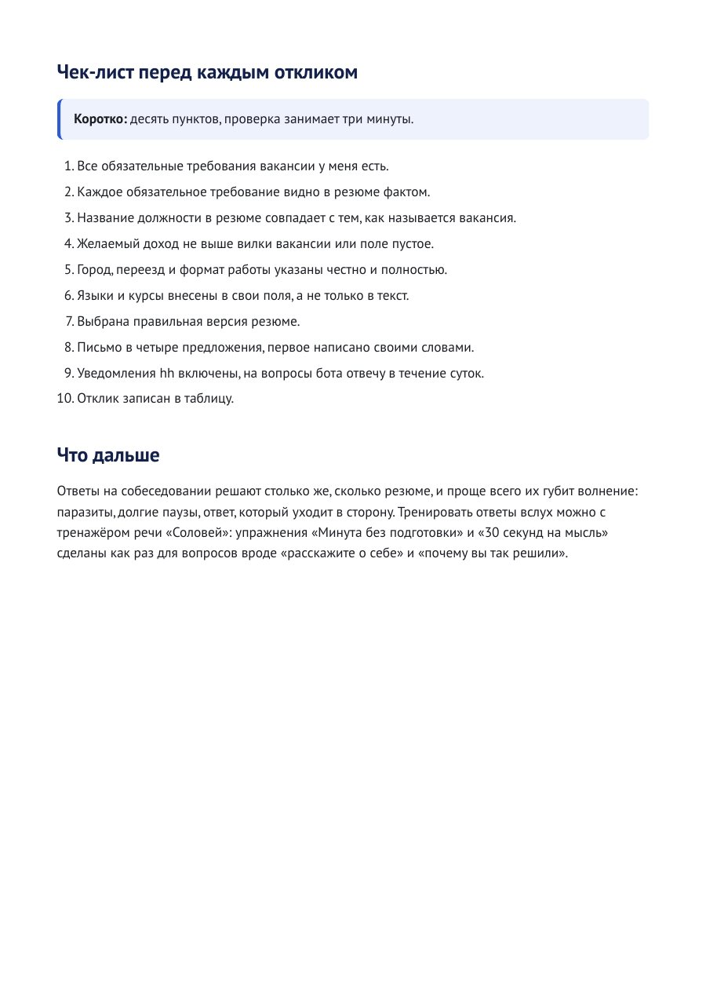

Гайд для тех, кто ищет работу на hh.ru
Чтобы на отклики отвечали, а не молчали
Как резюме читают алгоритмы hh.ru и что в нём поменять. Плюс план поиска на 14 дней.
Знакомо?
Отправили отклик утром, а через четверть часа пришёл отказ. Резюме за это время никто не открывал.
Откликов десятки, приглашений почти нет. Кажется, что дело в опыте, возрасте или в вас самих.
В чат пришёл вопрос, вы ответили на следующий день, и отклик будто пропал.
Дело не в вас. Сейчас первым резюме часто читает машина, и у неё свои правила.
Что внутри гайда
Как вас отбирают
Как работает авторазбор по полям резюме, откуда отказ за 15 минут и как ИИ-помощник решает «подходите» или «не сейчас».
Что переписать
Название должности как в вакансиях, опыт в формате «действие, цифра, результат», поле зарплаты и сопроводительное в четыре предложения.
Как действовать дальше
Ответы на вопросы бота в чате, план на 14 дней, таблица откликов и готовые подсказки для нейросетей.


Как получить гайд
Оплатите
Картой или через СБП на защищённой странице Prodamus.
Получите PDF
Сразу после оплаты: PDF придёт в Telegram-бот, ссылка на скачивание продублируется на почту.
Пройдите план
За вечер переделайте резюме, дальше две недели действуйте по дням.
Без громких обещаний
Гайд не гарантирует работу: решение принимают работодатели. Он помогает, чтобы резюме дошло до человека и было понятно с первых строк.
Механика описана по справке и блогу hh.ru. Проект независимый и не связан с hh.ru.
Вопросы
В каком формате гайд?
PDF на 13 страниц. Удобно читать и с телефона, и с компьютера.
Как и когда я его получу?
Сразу после оплаты страница вернёт вас в Telegram-бот, и там будет PDF. Ссылка на скачивание придёт ещё и на почту, которую вы укажете. Если что-то не пришло, напишите боту или нам на почту.
А если файл не откроется?
Пришлём заново. Если не получится исправить, вернём деньги. Все условия в публичной оферте.
Чем гайд лучше бесплатных советов?
В нём всё собрано в одну систему: что именно поменять в резюме, как отвечать на вопросы в чате и что делать каждый день две недели.
Куда писать вопросы?
На почту listestateru+otklik@gmail.com. Отвечаем в течение трёх рабочих дней.